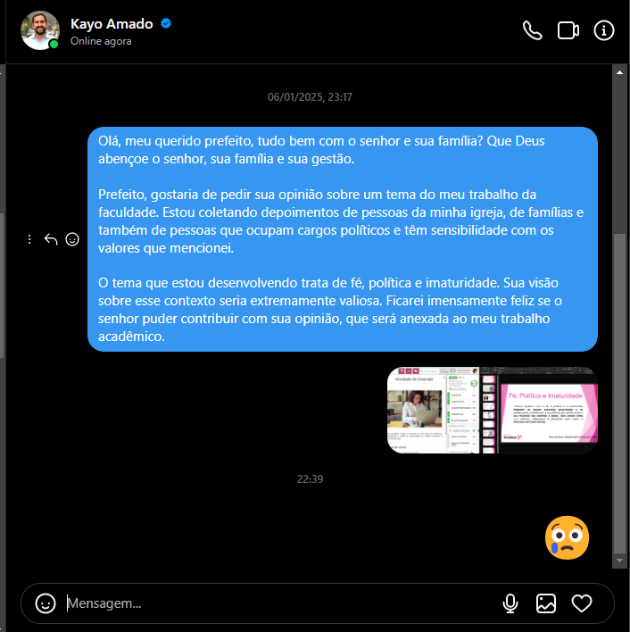

A relação entre fé, política e imaturidade no Brasil é um tema delicado que afeta diretamente os jovens e a comunidade. Este Tema busca entender como esses fatores influenciam nossas crenças e escolhas, muitas vezes de forma natural ou oportuna, e como isso pode impactar o futuro das nossas gerações.
Queremos abrir espaço para reflexões honestas e construtivas, promovendo diálogos que ajudem a fortalecer valores e princípios. Afinal, entender essas conexões pode nos guiar para decisões mais conscientes e coletivas para nosso Futuro.
O Cenário Atual
A combinação de discursos religiosos e políticos com a falta de reflexão crítica tem se mostrado um problema preocupante no Brasil. É comum ver debates calorosos e sem conexão, onde as opiniões são baseadas mais em emoções ou fã clube, do que em fatos e argumentos sólidos e por experiências. Essa dinâmica, muitas vezes, resulta em decisões impulsivas que impactam não apenas o indivíduo, mas todo o nosso povo.
Por Que Precisamos Falar Sobre Isso?
Nosso estudo e as conversas realizadas com diferentes públicos: com adolescentes, adultos e líderes religiosos temos visto evidenciaram muito importante como: há uma urgência em promover espaços de diálogo saudável e educativo. É necessário ensinar que a fé pode conviver com a política sem que uma anule a outra, e que o pensamento crítico é uma ferramenta indispensável para a tomada de decisões justas e equilibradas.
O Papel da Educação e do Diálogo
Para superar a imaturidade que permeia esses debates, precisamos investir em educação. Não apenas a educação formal, mas também em espaços de aprendizado informal, como bate-papos, discussões mediadas e conteúdos interativos, como podcasts e vídeos. A tecnologia pode ser uma aliada poderosa nesse processo, oferecendo ferramentas que ajudam a conectar pessoas e idéias.
O Caminho Para o Futuro
Fé e política não precisam ser campos de batalha. Elas podem, e devem, ser instrumentos de transformação positiva. No entanto, para isso, precisamos abandonar a imaturidade e abraçar a responsabilidade de refletir sobre nossas crenças e ações.
Depoimentos e Opiniões
Este espaço foi criado para compartilhar as vozes de pessoas que gentilmente contribuíram com seus depoimentos e opiniões para enriquecer este trabalho. Através de suas palavras, é possível explorar diferentes perspectivas, sentimentos e experiências que tornam este projeto.
Cada opinião aqui apresentada é um reflexo autêntico de quem participa, trazendo um olhar pessoal e genuíno que certamente acrescenta profundidade e significado à obra. Convidamos você a apreciar essas contribuições!
×
Tentativa Especial
Quero expressar minha imensa alegria e gratidão por todos os depoimentos, opiniões e feedbacks recebidos sobre meu trabalho. Aproveito para compartilhar aqui uma imagem de uma tentativa especial: buscar a opinião do nosso Prefeito de São Vicente, Kayo Amado . Infelizmente, não foi possível.

×
Referências
SILVA, J. T.um olhar crítico. São Paulo: Editora Acadêmica, 2018.
José Carlos Políticas Educacionais Neoliberais e escola Púplica, 2018.
Matheus Estevão Ferreira DIREITOS HUMANOS,DIVERSIDADE, GÊNERO E SEXUALIDADE, 2018.
Camila Aparecida Pesquisa em Políticas Educacionais: Contribuições para o debate, 2018.
SANTOS, A. M. SANTOS, A. M. Cultura de Paz e Conflitos. Rio de Janeiro: Ed. Paz e Terra, 2020.
BRASIL, Instituto de Pesquisa . Desigualdades e Religião. Brasília: IPEA, 2021.
FREEPIK , foi usado algums imagens do trabalho
Copilot , gerador de imagem
Ferramentas utilizadas : Microsoft Excel (para geração de gráficos), PowerPoint (para apresentação), Luvvoice (transforma texto em audio), VS Code, Github, netlify( hospedagem de site), e inteligência artificial para apoio na elaboração de conteúdo e imagens."